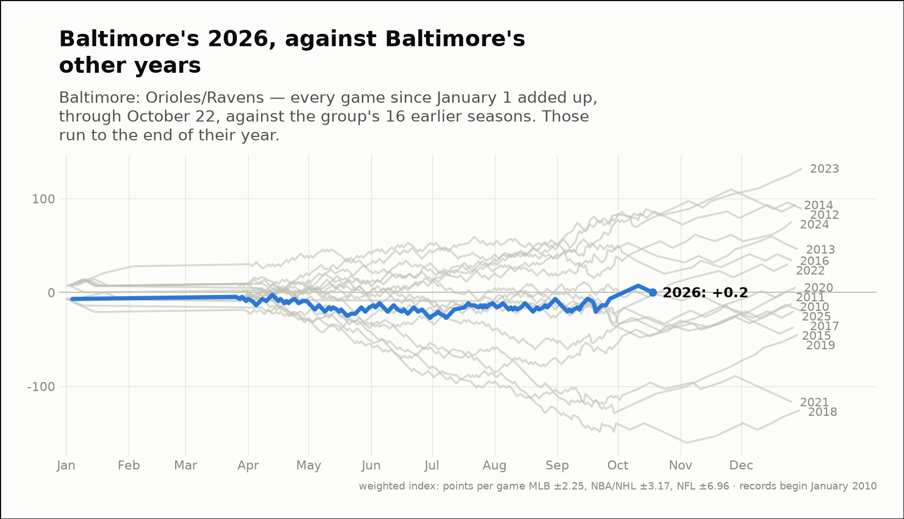
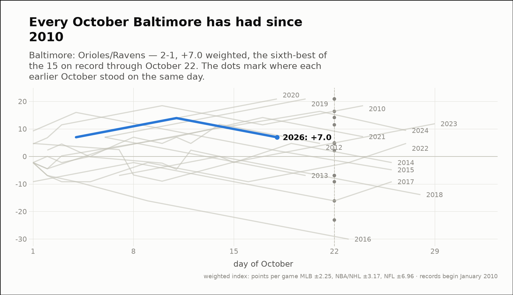
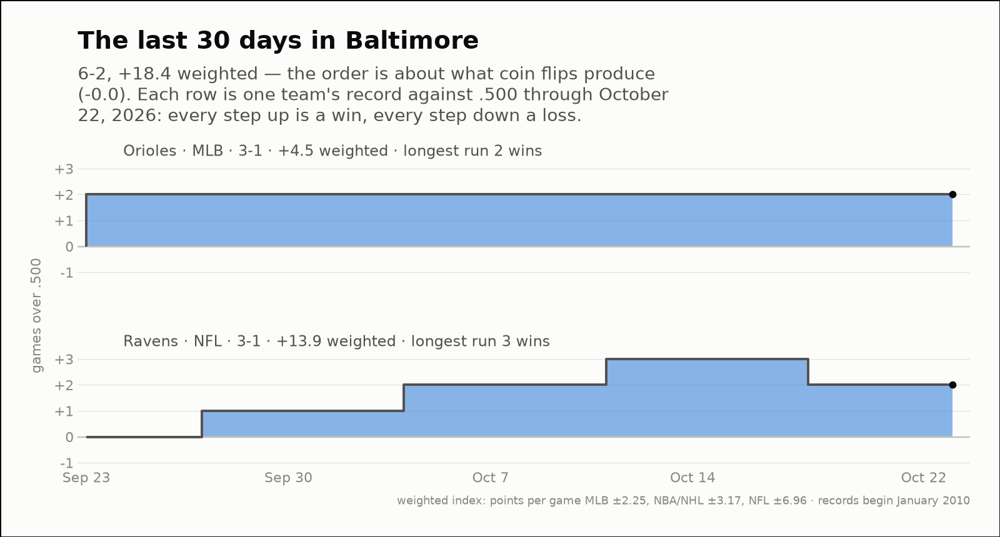

City of the day — Baltimore
Baltimore: Orioles/Ravens
- 2026 so far
- 83-85, +0.2 weighted over 168 games; longest run 7 straight wins
- Order of results
- about as clumped as coin flips (+0.9)
- Earlier seasons (full-year weighted)
- 2010 -12.0, 2011 +1.6, 2012 +88.8, 2013 +45.8, 2014 +93.2, 2015 -37.0, 2016 +33.8, 2017 -20.1, 2018 -125.4, 2019 -45.2, 2020 +5.3, 2021 -116.8, 2022 +29.9, 2023 +132.1, 2024 +75.3, 2025 -20.1
- Last 30 days
- 6-2, +18.4 weighted; longest run 4 straight wins
- Window opens
- September 23, 2026
- October 2026 through day 22
- 2-1, +7.0 weighted — the sixth-best of the 15 on record
- Same October in earlier years (same stretch)
- 2010 +11.5, 2012 +4.7, 2013 -7.0, 2014 +4.7, 2015 +2.1, 2016 -23.1, 2017 -16.2, 2018 -7.0, 2019 +20.9, 2020 +20.9, 2021 +14.1, 2022 -9.2, 2023 +4.9, 2024 +16.4
| Team | Last 30 days | Weighted | Longest run |
|---|---|---|---|
| Orioles | 3-1 | +4.5 | 2 straight wins |
| Ravens | 3-1 | +13.9 | 3 straight wins |


